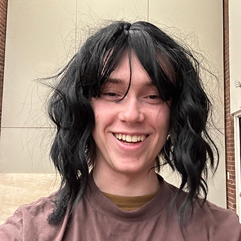
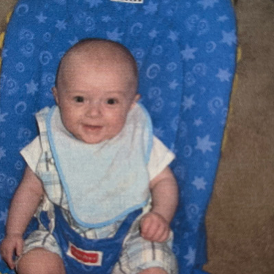
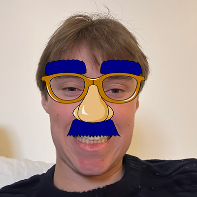
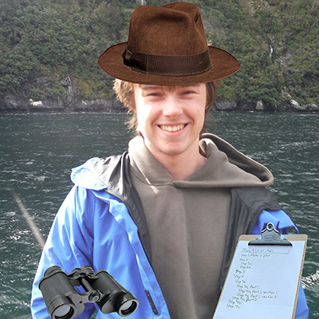

Cubert Kyphosis is the founder of the Library Ecologists project and now serves as our Editor-in-Chief.

Nermal Scolicies is the best of the best when it comes to finding a comfortable place to nap. No beanbag, couch, or quiet room can hide from him.

James Smith is our reporter abroad. From Abu Dhabi to Zurich, he aims to discover all the study spaces the world has to offer.

Cirrus Taenia is the head of our ecology department. He is responsible for ensuring all our articles published are supported by current ecological research and integrate their theories.
This is when we were founded by Cubert Kyphosis. Born out of his love for libraries, we have been studying and supporting them ever since!
This is when we published our first article after conducting a study on the impact of lighting on student choice of seating.
On this day, we researched and studied our 50th library!
During the COVID-19 Pandemic, we were named by the CDC as a leading resource in how to keep library spaces healthy and clean for those wishing to return back to libraries.
We celebrated 5 years of library study with a 48-hour library studying marathon.
On this day, Nermal Scolicies was born and put quickly to work!